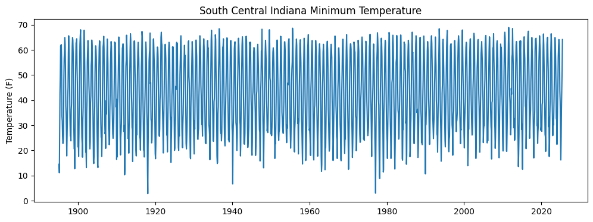
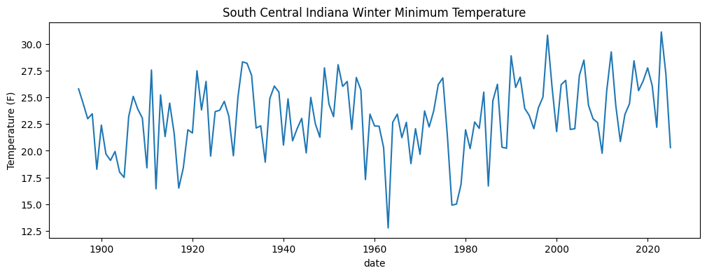
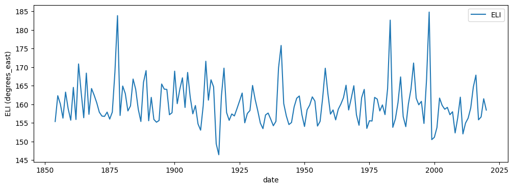
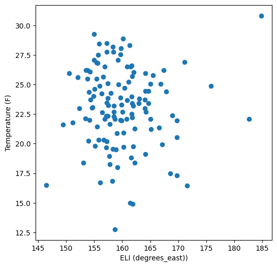
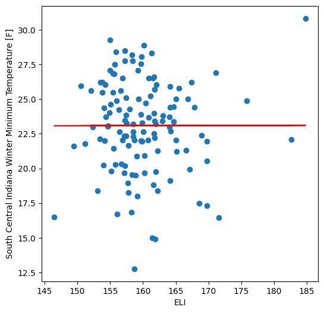

Work-along: El Nino and IN Winter Temperatures#
This notebook examines the relationship between winter minimum temperatures in southern central IN and El Nino.
Goal: examine the relationship between El Nino and minimum winter (Dec-Jan-Feb) temperatures in Bloomington, IN
Method:
obtain minimum temperature data from NOAA NClimDiv, using the NCEI Direct Download method
read the dataset using
pandas, filter out data for southern central Indianaconvert the data to timeseries format
obtain the ENSO longitude index Excel file and read with
pandas; convert to timeseries formatmake the ENSO and NClimDiv timeseries align (same start and end dates, same period - DJF, etc)
plot both timeseries
plot a scatter plot
do linear regression and correlation analyses
For this solution notebook, I will be using data directly from NOAA instead of downloading it, since pandas has the ability to open data from a URL.
Part 1: Getting the NClimDiv data#
Attention
Download this notebook and place it in your course folder, running it in Visual Studio Code (not Google Colab). You’ll commit this to your git repository at the end.
""" Import libraries. """
import numpy as np
import matplotlib as mpl
import matplotlib.pyplot as plt
import scipy.stats
import pandas as pd
According to the README file, the first column encodes climate division, variable, and year information, and the remaining 12 columns give data for that month. The format for the ‘code’ column is as follows:
Element Record
Name Position Element Description
STATE-CODE 1-2 STATE-CODE as indicated in State Code Table as
described in FILE 1. Range of values is 01-91.
DIVISION-NUMBER 3-4 DIVISION NUMBER - Assigned by NCDC. Range of
values 01-10.
ELEMENT CODE 5-6 01 = Precipitation
02 = Average Temperature
05 = PDSI
06 = PHDI
07 = ZNDX
08 = PMDI
25 = Heating Degree Days
26 = Cooling Degree Days
27 = Maximum Temperature
28 = Minimum Temperature
71 = 1-month Standardized Precipitation Index
72 = 2-month Standardized Precipitation Index
73 = 3-month Standardized Precipitation Index
74 = 6-month Standardized Precipitation Index
75 = 9-month Standardized Precipitation Index
76 = 12-month Standardized Precipitation Index
77 = 24-month Standardized Precipitation Index
YEAR 7-10 This is the year of record. Range is 1895 to
current year processed.
And the state codes are as follows:
STATE CODE TABLE:
Range of values of 01-91.
01 Alabama 28 New Jersey
02 Arizona 29 New Mexico
03 Arkansas 30 New York
04 California 31 North Carolina
05 Colorado 32 North Dakota
06 Connecticut 33 Ohio
07 Delaware 34 Oklahoma
08 Florida 35 Oregon
09 Georgia 36 Pennsylvania
10 Idaho 37 Rhode Island
11 Illinois 38 South Carolina
12 Indiana 39 South Dakota
13 Iowa 40 Tennessee
14 Kansas 41 Texas
15 Kentucky 42 Utah
16 Louisiana 43 Vermont
17 Maine 44 Virginia
18 Maryland 45 Washington
19 Massachusetts 46 West Virginia
20 Michigan 47 Wisconsin
21 Minnesota 48 Wyoming
22 Mississippi 50 Alaska
23 Missouri
24 Montana
25 Nebraska
26 Nevada
27 New Hampshire
""" Load the tmin data file. """
climdiv_tminv_url = "https://www.ncei.noaa.gov/pub/data/cirs/climdiv/climdiv-tmindv-v1.0.0-20250707"
# read the NClimDiv data setting -99.99 to NaN
climdiv_tminv = pd.read_csv(climdiv_tminv_url, sep='\s+', header=None, names=['code'] + list(range(1,13)), na_values=-99.9)
climdiv_tminv
<>:6: SyntaxWarning: invalid escape sequence '\s'
<>:6: SyntaxWarning: invalid escape sequence '\s'
/tmp/ipykernel_1896249/1322948465.py:6: SyntaxWarning: invalid escape sequence '\s'
climdiv_tminv = pd.read_csv(climdiv_tminv_url, sep='\s+', header=None, names=['code'] + list(range(1,13)), na_values=-99.9)
/tmp/ipykernel_1896249/1322948465.py:6: SyntaxWarning: invalid escape sequence '\s'
climdiv_tminv = pd.read_csv(climdiv_tminv_url, sep='\s+', header=None, names=['code'] + list(range(1,13)), na_values=-99.9)
---------------------------------------------------------------------------
SSLCertVerificationError Traceback (most recent call last)
File ~/.local/share/uv/python/cpython-3.12.10-linux-x86_64-gnu/lib/python3.12/urllib/request.py:1344, in AbstractHTTPHandler.do_open(self, http_class, req, **http_conn_args)
1343 try:
-> 1344 h.request(req.get_method(), req.selector, req.data, headers,
1345 encode_chunked=req.has_header('Transfer-encoding'))
1346 except OSError as err: # timeout error
File ~/.local/share/uv/python/cpython-3.12.10-linux-x86_64-gnu/lib/python3.12/http/client.py:1338, in HTTPConnection.request(self, method, url, body, headers, encode_chunked)
1337 """Send a complete request to the server."""
-> 1338 self._send_request(method, url, body, headers, encode_chunked)
File ~/.local/share/uv/python/cpython-3.12.10-linux-x86_64-gnu/lib/python3.12/http/client.py:1384, in HTTPConnection._send_request(self, method, url, body, headers, encode_chunked)
1383 body = _encode(body, 'body')
-> 1384 self.endheaders(body, encode_chunked=encode_chunked)
File ~/.local/share/uv/python/cpython-3.12.10-linux-x86_64-gnu/lib/python3.12/http/client.py:1333, in HTTPConnection.endheaders(self, message_body, encode_chunked)
1332 raise CannotSendHeader()
-> 1333 self._send_output(message_body, encode_chunked=encode_chunked)
File ~/.local/share/uv/python/cpython-3.12.10-linux-x86_64-gnu/lib/python3.12/http/client.py:1093, in HTTPConnection._send_output(self, message_body, encode_chunked)
1092 del self._buffer[:]
-> 1093 self.send(msg)
1095 if message_body is not None:
1096
1097 # create a consistent interface to message_body
File ~/.local/share/uv/python/cpython-3.12.10-linux-x86_64-gnu/lib/python3.12/http/client.py:1037, in HTTPConnection.send(self, data)
1036 if self.auto_open:
-> 1037 self.connect()
1038 else:
File ~/.local/share/uv/python/cpython-3.12.10-linux-x86_64-gnu/lib/python3.12/http/client.py:1479, in HTTPSConnection.connect(self)
1477 server_hostname = self.host
-> 1479 self.sock = self._context.wrap_socket(self.sock,
1480 server_hostname=server_hostname)
File ~/.local/share/uv/python/cpython-3.12.10-linux-x86_64-gnu/lib/python3.12/ssl.py:455, in SSLContext.wrap_socket(self, sock, server_side, do_handshake_on_connect, suppress_ragged_eofs, server_hostname, session)
449 def wrap_socket(self, sock, server_side=False,
450 do_handshake_on_connect=True,
451 suppress_ragged_eofs=True,
452 server_hostname=None, session=None):
453 # SSLSocket class handles server_hostname encoding before it calls
454 # ctx._wrap_socket()
--> 455 return self.sslsocket_class._create(
456 sock=sock,
457 server_side=server_side,
458 do_handshake_on_connect=do_handshake_on_connect,
459 suppress_ragged_eofs=suppress_ragged_eofs,
460 server_hostname=server_hostname,
461 context=self,
462 session=session
463 )
File ~/.local/share/uv/python/cpython-3.12.10-linux-x86_64-gnu/lib/python3.12/ssl.py:1041, in SSLSocket._create(cls, sock, server_side, do_handshake_on_connect, suppress_ragged_eofs, server_hostname, context, session)
1040 raise ValueError("do_handshake_on_connect should not be specified for non-blocking sockets")
-> 1041 self.do_handshake()
1042 except:
File ~/.local/share/uv/python/cpython-3.12.10-linux-x86_64-gnu/lib/python3.12/ssl.py:1319, in SSLSocket.do_handshake(self, block)
1318 self.settimeout(None)
-> 1319 self._sslobj.do_handshake()
1320 finally:
SSLCertVerificationError: [SSL: CERTIFICATE_VERIFY_FAILED] certificate verify failed: unable to get local issuer certificate (_ssl.c:1010)
During handling of the above exception, another exception occurred:
URLError Traceback (most recent call last)
Cell In[2], line 6
3 climdiv_tminv_url = "https://www.ncei.noaa.gov/pub/data/cirs/climdiv/climdiv-tmindv-v1.0.0-20250707"
5 # read the NClimDiv data setting -99.99 to NaN
----> 6 climdiv_tminv = pd.read_csv(climdiv_tminv_url, sep='\s+', header=None, names=['code'] + list(range(1,13)), na_values=-99.9)
8 climdiv_tminv
File /N/project/easg690_fall2025/student_work_dirs/obrienta/advanced_earth_science_data_analysis/.venv/lib/python3.12/site-packages/pandas/io/parsers/readers.py:1026, in read_csv(filepath_or_buffer, sep, delimiter, header, names, index_col, usecols, dtype, engine, converters, true_values, false_values, skipinitialspace, skiprows, skipfooter, nrows, na_values, keep_default_na, na_filter, verbose, skip_blank_lines, parse_dates, infer_datetime_format, keep_date_col, date_parser, date_format, dayfirst, cache_dates, iterator, chunksize, compression, thousands, decimal, lineterminator, quotechar, quoting, doublequote, escapechar, comment, encoding, encoding_errors, dialect, on_bad_lines, delim_whitespace, low_memory, memory_map, float_precision, storage_options, dtype_backend)
1013 kwds_defaults = _refine_defaults_read(
1014 dialect,
1015 delimiter,
(...) 1022 dtype_backend=dtype_backend,
1023 )
1024 kwds.update(kwds_defaults)
-> 1026 return _read(filepath_or_buffer, kwds)
File /N/project/easg690_fall2025/student_work_dirs/obrienta/advanced_earth_science_data_analysis/.venv/lib/python3.12/site-packages/pandas/io/parsers/readers.py:620, in _read(filepath_or_buffer, kwds)
617 _validate_names(kwds.get("names", None))
619 # Create the parser.
--> 620 parser = TextFileReader(filepath_or_buffer, **kwds)
622 if chunksize or iterator:
623 return parser
File /N/project/easg690_fall2025/student_work_dirs/obrienta/advanced_earth_science_data_analysis/.venv/lib/python3.12/site-packages/pandas/io/parsers/readers.py:1620, in TextFileReader.__init__(self, f, engine, **kwds)
1617 self.options["has_index_names"] = kwds["has_index_names"]
1619 self.handles: IOHandles | None = None
-> 1620 self._engine = self._make_engine(f, self.engine)
File /N/project/easg690_fall2025/student_work_dirs/obrienta/advanced_earth_science_data_analysis/.venv/lib/python3.12/site-packages/pandas/io/parsers/readers.py:1880, in TextFileReader._make_engine(self, f, engine)
1878 if "b" not in mode:
1879 mode += "b"
-> 1880 self.handles = get_handle(
1881 f,
1882 mode,
1883 encoding=self.options.get("encoding", None),
1884 compression=self.options.get("compression", None),
1885 memory_map=self.options.get("memory_map", False),
1886 is_text=is_text,
1887 errors=self.options.get("encoding_errors", "strict"),
1888 storage_options=self.options.get("storage_options", None),
1889 )
1890 assert self.handles is not None
1891 f = self.handles.handle
File /N/project/easg690_fall2025/student_work_dirs/obrienta/advanced_earth_science_data_analysis/.venv/lib/python3.12/site-packages/pandas/io/common.py:728, in get_handle(path_or_buf, mode, encoding, compression, memory_map, is_text, errors, storage_options)
725 codecs.lookup_error(errors)
727 # open URLs
--> 728 ioargs = _get_filepath_or_buffer(
729 path_or_buf,
730 encoding=encoding,
731 compression=compression,
732 mode=mode,
733 storage_options=storage_options,
734 )
736 handle = ioargs.filepath_or_buffer
737 handles: list[BaseBuffer]
File /N/project/easg690_fall2025/student_work_dirs/obrienta/advanced_earth_science_data_analysis/.venv/lib/python3.12/site-packages/pandas/io/common.py:384, in _get_filepath_or_buffer(filepath_or_buffer, encoding, compression, mode, storage_options)
382 # assuming storage_options is to be interpreted as headers
383 req_info = urllib.request.Request(filepath_or_buffer, headers=storage_options)
--> 384 with urlopen(req_info) as req:
385 content_encoding = req.headers.get("Content-Encoding", None)
386 if content_encoding == "gzip":
387 # Override compression based on Content-Encoding header
File /N/project/easg690_fall2025/student_work_dirs/obrienta/advanced_earth_science_data_analysis/.venv/lib/python3.12/site-packages/pandas/io/common.py:289, in urlopen(*args, **kwargs)
283 """
284 Lazy-import wrapper for stdlib urlopen, as that imports a big chunk of
285 the stdlib.
286 """
287 import urllib.request
--> 289 return urllib.request.urlopen(*args, **kwargs)
File ~/.local/share/uv/python/cpython-3.12.10-linux-x86_64-gnu/lib/python3.12/urllib/request.py:215, in urlopen(url, data, timeout, cafile, capath, cadefault, context)
213 else:
214 opener = _opener
--> 215 return opener.open(url, data, timeout)
File ~/.local/share/uv/python/cpython-3.12.10-linux-x86_64-gnu/lib/python3.12/urllib/request.py:515, in OpenerDirector.open(self, fullurl, data, timeout)
512 req = meth(req)
514 sys.audit('urllib.Request', req.full_url, req.data, req.headers, req.get_method())
--> 515 response = self._open(req, data)
517 # post-process response
518 meth_name = protocol+"_response"
File ~/.local/share/uv/python/cpython-3.12.10-linux-x86_64-gnu/lib/python3.12/urllib/request.py:532, in OpenerDirector._open(self, req, data)
529 return result
531 protocol = req.type
--> 532 result = self._call_chain(self.handle_open, protocol, protocol +
533 '_open', req)
534 if result:
535 return result
File ~/.local/share/uv/python/cpython-3.12.10-linux-x86_64-gnu/lib/python3.12/urllib/request.py:492, in OpenerDirector._call_chain(self, chain, kind, meth_name, *args)
490 for handler in handlers:
491 func = getattr(handler, meth_name)
--> 492 result = func(*args)
493 if result is not None:
494 return result
File ~/.local/share/uv/python/cpython-3.12.10-linux-x86_64-gnu/lib/python3.12/urllib/request.py:1392, in HTTPSHandler.https_open(self, req)
1391 def https_open(self, req):
-> 1392 return self.do_open(http.client.HTTPSConnection, req,
1393 context=self._context)
File ~/.local/share/uv/python/cpython-3.12.10-linux-x86_64-gnu/lib/python3.12/urllib/request.py:1347, in AbstractHTTPHandler.do_open(self, http_class, req, **http_conn_args)
1344 h.request(req.get_method(), req.selector, req.data, headers,
1345 encode_chunked=req.has_header('Transfer-encoding'))
1346 except OSError as err: # timeout error
-> 1347 raise URLError(err)
1348 r = h.getresponse()
1349 except:
URLError: <urlopen error [SSL: CERTIFICATE_VERIFY_FAILED] certificate verify failed: unable to get local issuer certificate (_ssl.c:1010)>
Following the information in the README file, we want statecode 12 and (from looking at other sources) division code 08 for southern central IN. We can use pandas functions to filter out rows that start with code 1208.
""" Isolate the south central IN region """
state_region_code = "1208"
# find rows that start with the state_region_code
scin_rows = climdiv_tminv[climdiv_tminv['code'].astype(str).str.startswith(state_region_code)]
scin_rows
| code | 1 | 2 | 3 | 4 | 5 | 6 | 7 | 8 | 9 | 10 | 11 | 12 | |
|---|---|---|---|---|---|---|---|---|---|---|---|---|---|
| 10873 | 1208281895 | 14.5 | 11.1 | 28.5 | 42.8 | 50.1 | 61.6 | 61.8 | 62.1 | 56.9 | 33.6 | 31.6 | 25.8 |
| 10874 | 1208281896 | 22.8 | 23.5 | 26.5 | 47.8 | 56.6 | 59.7 | 64.9 | 62.1 | 52.8 | 37.7 | 34.4 | 27.0 |
| 10875 | 1208281897 | 17.8 | 25.4 | 33.3 | 40.8 | 45.1 | 58.4 | 65.6 | 60.3 | 53.6 | 45.3 | 32.6 | 25.8 |
| 10876 | 1208281898 | 26.0 | 23.8 | 36.2 | 38.8 | 53.1 | 61.5 | 64.9 | 63.9 | 58.8 | 45.0 | 28.8 | 20.6 |
| 10877 | 1208281899 | 20.7 | 12.7 | 29.4 | 43.9 | 55.1 | 62.8 | 63.0 | 64.4 | 53.1 | 46.5 | 36.1 | 21.4 |
| ... | ... | ... | ... | ... | ... | ... | ... | ... | ... | ... | ... | ... | ... |
| 10999 | 1208282021 | 25.4 | 19.6 | 35.6 | 41.0 | 49.0 | 62.2 | 64.7 | 65.0 | 57.2 | 51.3 | 29.4 | 33.3 |
| 11000 | 1208282022 | 17.6 | 23.1 | 34.2 | 40.6 | 54.9 | 60.0 | 66.4 | 63.5 | 55.7 | 39.5 | 33.1 | 25.9 |
| 11001 | 1208282023 | 31.2 | 30.0 | 33.0 | 41.2 | 50.8 | 56.8 | 64.9 | 61.9 | 55.9 | 45.8 | 32.7 | 32.2 |
| 11002 | 1208282024 | 22.4 | 30.1 | 36.9 | 46.0 | 56.9 | 61.4 | 64.1 | 62.6 | 57.4 | 43.7 | 39.4 | 29.1 |
| 11003 | 1208282025 | 16.2 | 24.4 | 36.3 | 43.3 | 51.6 | 64.1 | NaN | NaN | NaN | NaN | NaN | NaN |
131 rows × 13 columns
Okay, now we have 129 rows, ranging from the year 1895 up to 2023, and I see missing values for the last months of 2025 (Aug-Dec) as expected given that those months don’t yet have data.
Now we want to create a vector timeseries out of this. We can access the underlying numpy array and use ravel() to do so.
""" Extract a vector of the data values. """
# convert the data to a numpy array
scin_data_np = scin_rows.values
print(f"scin_data_np.shape = {scin_data_np.shape}")
# remove the first column (the code column)
scin_data_np = scin_data_np[:,1:]
# ravel the data
scin_data = scin_data_np.ravel()
scin_data
scin_data_np.shape = (131, 13)
array([14.5, 11.1, 28.5, ..., nan, nan, nan], shape=(1572,))
Now that we have the vector, we want to create a vector of the corresponding dates. We can use date_range to do this.
""" Create dates and plot the data. """
scin_dates = pd.date_range(start='1895-01-01', end='2025-12-31', freq='M')
fig, ax = plt.subplots(figsize=(12,4))
ax.plot(scin_dates, scin_data)
ax.set_title("South Central Indiana Minimum Temperature")
ax.set_ylabel("Temperature (F)")
plt.show()
/var/folders/0s/yp78v9d15qd8pmgtc3xknpfh37trx3/T/ipykernel_53285/2944604734.py:2: FutureWarning: 'M' is deprecated and will be removed in a future version, please use 'ME' instead.
scin_dates = pd.date_range(start='1895-01-01', end='2025-12-31', freq='M')

Now that we have the timeseries, we can use pandas to calculate the DJF averages.
""" Calculate winter (DJF) averages. """
# create a new pandas dataframe with the dates and data
scin_df = pd.DataFrame({'date': scin_dates, 'South Central Indiana': scin_data})
# extract only DJF data
scin_djf_df = scin_df[scin_df['date'].dt.month.isin([12,1,2])]
# omit the first two steps of the first year and the last step of the last year since they are incomplete seasons
scin_djf_df = scin_djf_df.iloc[2:-1]
# group by year and average
scin_djf_avg = scin_djf_df.groupby(scin_djf_df['date'].dt.year).mean()
# plot the data
fig, ax = plt.subplots(figsize=(12,4))
scin_djf_avg['South Central Indiana'].plot(ax = ax)
ax.set_title("South Central Indiana Winter Minimum Temperature")
ax.set_ylabel("Temperature (F)")
plt.show()

Part 2: Getting the ELI data#
""" Get the ENSO data. """
eli_url = "https://portal.nersc.gov/archive/home/projects/cascade/www/ELI/ELI_ERSSTv5_1854.01-2020.05.xlsx"
# read the data (note, I had to install the openpyxl package to read this file)
eli_df = pd.read_excel(eli_url, sheet_name='ELI_ERSSTv5_1854.01-2020.02', header=0, index_col=0, parse_dates=True)
eli_df
/var/folders/0s/yp78v9d15qd8pmgtc3xknpfh37trx3/T/ipykernel_53285/620503612.py:5: UserWarning: Could not infer format, so each element will be parsed individually, falling back to `dateutil`. To ensure parsing is consistent and as-expected, please specify a format.
eli_df = pd.read_excel(eli_url, sheet_name='ELI_ERSSTv5_1854.01-2020.02', header=0, index_col=0, parse_dates=True)
| 1854 | 1855 | 1856 | 1857 | 1858 | 1859 | 1860 | 1861 | 1862 | 1863 | ... | 2011 | 2012 | 2013 | 2014 | 2015 | 2016 | 2017 | 2018 | 2019 | 2020 | |
|---|---|---|---|---|---|---|---|---|---|---|---|---|---|---|---|---|---|---|---|---|---|
| Jan | 158.62 | 156.95 | 163.24 | 151.52 | 164.42 | 158.76 | 156.20 | 159.05 | 155.27 | 158.75 | ... | 150.93 | 152.95 | 155.70 | 157.64 | 160.75 | 175.10 | 155.08 | 154.20 | 160.23 | 158.67 |
| Feb | 159.30 | 159.96 | 158.84 | 154.36 | 167.38 | 154.50 | 153.08 | 178.75 | 156.26 | 178.35 | ... | 150.42 | 153.97 | 154.62 | 157.65 | 160.22 | 172.86 | 156.50 | 154.15 | 163.96 | 158.26 |
| Mar | 154.63 | 155.97 | 158.07 | 150.68 | 154.81 | 157.37 | 161.36 | 172.58 | 159.08 | 166.54 | ... | 146.19 | 153.88 | 147.89 | 158.11 | 161.58 | 164.78 | 158.90 | 151.16 | 161.35 | 155.82 |
| Apr | 154.60 | 154.78 | 150.77 | 147.31 | 162.29 | 154.51 | 152.08 | 151.74 | 151.58 | 154.86 | ... | 146.99 | 158.13 | 148.63 | 154.01 | 164.81 | 155.91 | 156.11 | 152.29 | 157.37 | 152.13 |
| May | 160.56 | 159.68 | 157.31 | 157.18 | 163.30 | 155.67 | 155.39 | 153.93 | 154.05 | 153.56 | ... | 148.74 | 151.82 | 157.76 | 157.77 | 167.87 | 160.95 | 157.20 | 157.35 | 161.7 | 154.51 |
| Jun | 167.42 | 164.79 | 160.78 | 175.59 | 166.08 | 159.56 | 168.50 | 158.09 | 161.82 | 158.75 | ... | 160.46 | 163.68 | 163.07 | 168.99 | 179.12 | 162.99 | 166.31 | 163.56 | 169.81 | NaN |
| Jul | 171.27 | 169.29 | 164.36 | 170.79 | 168.07 | 172.13 | 174.46 | 162.12 | 163.93 | 175.96 | ... | 165.15 | 171.93 | 165.38 | 172.30 | 182.31 | 162.86 | 167.77 | 167.36 | 170.99 | NaN |
| Aug | 170.06 | 164.72 | 162.23 | 168.05 | 165.31 | 171.72 | 168.99 | 168.20 | 167.53 | 169.20 | ... | 163.99 | 170.16 | 165.98 | 170.86 | 182.46 | 160.89 | 165.69 | 167.66 | 169.55 | NaN |
| Sep | 167.25 | 170.77 | 157.28 | 171.20 | 163.19 | 166.94 | 160.77 | 167.22 | 172.79 | 165.32 | ... | 162.47 | 167.07 | 164.86 | 168.46 | 181.57 | 159.52 | 165.12 | 165.77 | 167.04 | NaN |
| Oct | 162.51 | 171.23 | 163.08 | 167.59 | 163.84 | 165.18 | 157.49 | 158.13 | 169.94 | 160.51 | ... | 158.79 | 164.63 | 161.79 | 164.21 | 179.94 | 156.15 | 161.67 | 165.35 | 164.16 | NaN |
| Nov | 159.23 | 172.59 | 162.32 | 161.12 | 156.80 | 164.99 | 157.38 | 156.89 | 170.88 | 163.11 | ... | 156.34 | 160.81 | 159.37 | 163.18 | 173.05 | 155.56 | 157.99 | 162.75 | 161.39 | NaN |
| Dec | 155.39 | 170.07 | 158.21 | 163.04 | 158.08 | 163.27 | 157.97 | 155.87 | 156.28 | 175.48 | ... | 154.87 | 157.99 | 158.56 | 161.79 | 172.93 | 155.60 | 155.97 | 161.52 | 160.333 | NaN |
12 rows × 167 columns
That was easy - but this data has a similar problem to the NClimDiv dataset - the data are in a table, but we want a timeseries. We can extract the numpy values, transpose, and ravel.
""" Create an ELI timeseries. """
# create a timeseries from the data
eli_data_np = eli_df.T.values.ravel()
# create dates corresponding to the data
eli_dates = pd.date_range(start='1854-01-01', end='2021-01-01', freq='M')
# put this back into a data frame
eli_ts_df = pd.DataFrame({'date': eli_dates, 'ELI': eli_data_np})
# calculate the DJF average
eli_djf_df = eli_ts_df[eli_ts_df['date'].dt.month.isin([12,1,2])]
# omit the first two steps of the first year and the last step of the last year since they are incomplete seasons
eli_djf_df = eli_djf_df.iloc[2:-1]
# group by year and average
eli_djf_avg = eli_djf_df.groupby(eli_djf_df['date'].dt.year).mean().drop('date', axis=1)
# plot the data
fig, ax = plt.subplots(figsize=(12,4))
eli_djf_avg.plot(ax = ax)
ax.set_ylabel("ELI (degrees_east)")
plt.show()
/var/folders/0s/yp78v9d15qd8pmgtc3xknpfh37trx3/T/ipykernel_53285/3917109031.py:7: FutureWarning: 'M' is deprecated and will be removed in a future version, please use 'ME' instead.
eli_dates = pd.date_range(start='1854-01-01', end='2021-01-01', freq='M')

Now that we have timeseries for both datasets, all that’s left is to combine them. Pandas makes that easy with the merge() method.
""" Combine the two datasets. """
# merge the two dataframes
scin_eli_df = pd.merge(scin_djf_avg, eli_djf_avg, left_index=True, right_index=True)
# plot a scatter plot
fig, ax = plt.subplots(figsize=(6,6))
ax.scatter(scin_eli_df['ELI'], scin_eli_df['South Central Indiana'])
ax.set_xlabel("ELI (degrees_east))")
ax.set_ylabel("Temperature (F)")
plt.show()

scin_eli_df['ELI']
date
1895 165.47
1896 164.1
1897 164.01
1898 157.22
1899 157.756667
...
2016 167.853333
2017 155.85
2018 156.623333
2019 161.507667
2020 158.465
Name: ELI, Length: 126, dtype: object
""" Calculate the correlation coefficient and regression line. """
# calculate the correlation coefficient
corr_matrix = scin_eli_df.corr()
corr = corr_matrix.iloc[0,1]
# calculate the regression line using scipy.stats.linregress
# note that we use the to_numpy() method to ensure we are using numpy arrays that are floats
# for some reason, the ELI data comes back as dtype 'object' and not 'float', so we convert it
result = scipy.stats.linregress(scin_eli_df['ELI'].to_numpy(dtype='float'), scin_eli_df['South Central Indiana'].to_numpy(dtype='float'))
m = result.slope
b = result.intercept
# plot the data with the regression line
fig, ax = plt.subplots(figsize=(6,6))
ax.scatter(scin_eli_df['ELI'], scin_eli_df['South Central Indiana'])
ax.plot(scin_eli_df['ELI'], m * scin_eli_df['ELI'] + b, color='red')
ax.set_xlabel("ELI")
ax.set_ylabel("South Central Indiana Winter Minimum Temperature [F]")
plt.show()

Based on visual inspection, based on a small correlation coefficient (close to 0.001!), and based on a nearly-zero regression slope, I conclude that El Nino has very little impact on minimum temperatures in the South Central Indiana region. So it appears that a prediction based on ELI might not be possible.